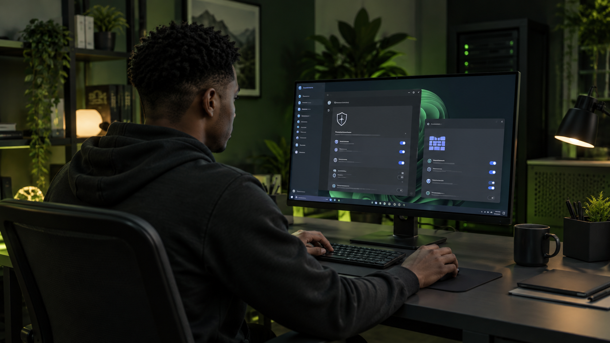

Systèmes
Administration et sécurisation d'environnements Windows & Linux.
Disponible pour stage & alternance
FOCUS — RÉSEAUX
Étudiant en cybersécurité, je développe des compétences concrètes en réseaux, systèmes et défense.
$ whoami
emmanuel_silue
$ focus --show
network · systems · security
$_
01 / PROFIL
Étudiant en deuxième année de Bachelor Cybersécurité à Aix Ynov Campus, je souhaite transformer mes connaissances techniques en réflexes professionnels au sein d'une équipe IT.
02 / COMPÉTENCES
Des compétences développées par la pratique.
Administration et sécurisation d'environnements Windows & Linux.
Compréhension, analyse et surveillance des flux réseau.
Mise en œuvre de bonnes pratiques de protection des postes.
Expérimentation et mise en situation dans des laboratoires dédiés.
03 / PROJETS
Trois projets techniques essentiels.
Capture de paquets, lecture des protocoles TCP/IP, HTTP et DNS, puis identification d'anomalies de communication.

Gestion des comptes, configuration du pare-feu et application de politiques de sécurité.

Gestion des utilisateurs et permissions, configuration des accès et surveillance des journaux.
D'autres projets et études de cas seront ajoutés au fil de ma formation. Vous souhaitez en savoir plus ?
04 / APPROCHE
Une méthode simple et structurée.
Comprendre les équipements, flux, comptes et services actifs.
Étudier les échanges et repérer les comportements inhabituels.
Appliquer les protections adaptées à l'environnement.
Documenter, tester et améliorer continuellement.
Contribuer à l'administration et à la sécurisation d'une infrastructure IT.
05 / PARCOURS
Aix Ynov Campus, Marseille
Aix Ynov Campus, France
Université Virtuelle de Côte d'Ivoire
Abidjan, Côte d'Ivoire
QUALITÉS
Communication, écoute et autonomie au service de mes projets techniques.
06 / CONTACT
Je recherche un stage en infrastructures systèmes & réseaux, ainsi qu'une alternance pour ma troisième année. Échangeons sur vos besoins.
M'écrire un email ↗